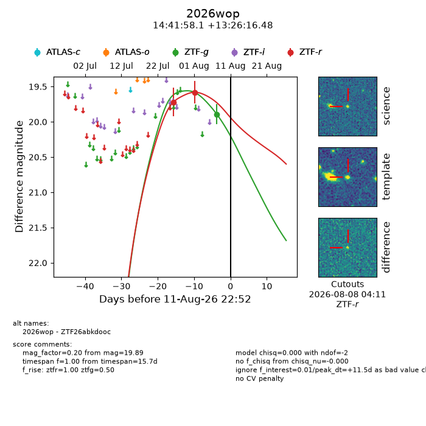
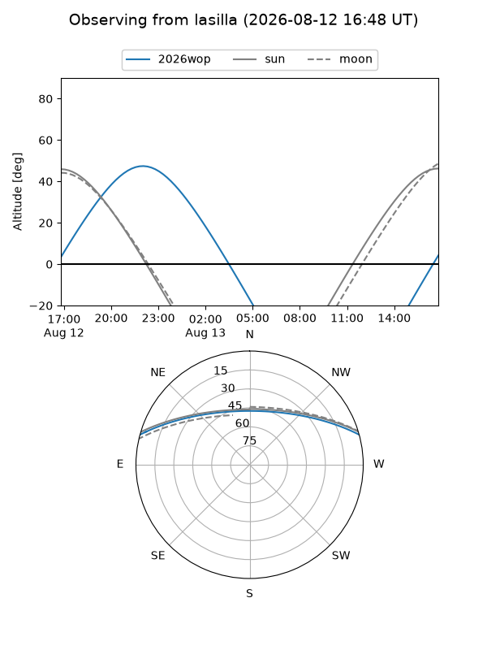
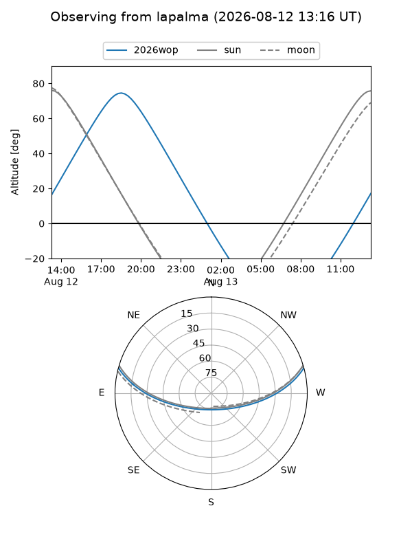
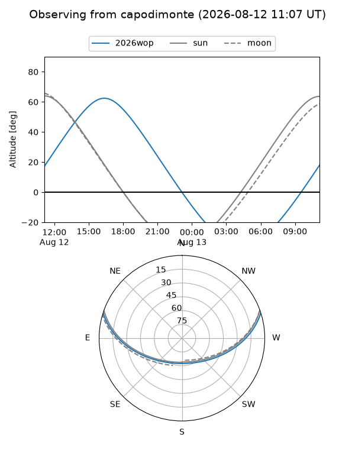
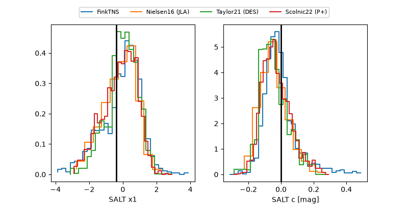

2026wop
Target 2026wop at 2026-08-12 10:42
Aliases and brokers:
FINK-ZTF: ztf.fink-portal.org/ZTF26abkdooc
Lasair-ZTF: lasair-ztf.lsst.ac.uk/objects/ZTF26abkdooc
ALeRCE-ZTF: alerce.online/object/ZTF26abkdooc
YSE-PZ: ziggy.ucolick.org/yse/transient_detail/2026wop
TNS name: wis-tns.org/object/2026wop
Direct TNS query: direct search
alt names
ZTF26abkdooc (ztf,fink_ztf)
2026wop (tns,yse)
Coordinates:
equatorial (ra, dec) = 220.4921,+13.43791
equatorial (HMS+DMS) = 14:41:58.11,+13:26:16.48
galactic (l, b) = (10.5148,+60.79222)
Flags:
TNS type: nan
peak dt: +12.0
Photometry:
last ztfg=19.89, ztfr=19.58
1 ztfg, 2 ztfr detections
Lightcurve

Visibility



Additional plots
